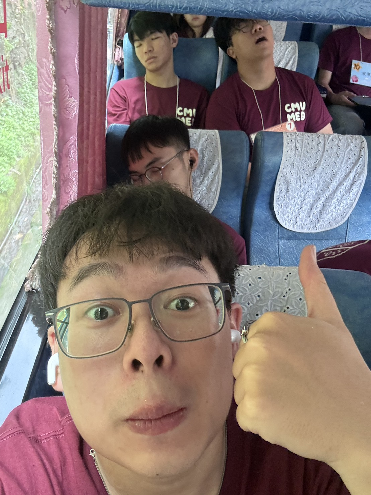

01 — Where it begins
從雲林，
帶著陽光出發。
我是劉冠宏，來自雲林。南部熱情的陽光陪我長大，也讓我習慣用開朗的方式和人相處。新的城市、新的生活，就從這裡開始認識。
起點：雲林
02 — My own rhythm
安靜一點，
有趣很多。
我其實是個 I 人，但熟了之後也很開朗、大方，偶爾還會冒出一些幽默感。喜歡先觀察，也很珍惜自在相處的時刻。

03 — Between study & play
認真生活，
也認真上場。
現在在醫學系學習。課本之外，最喜歡打籃球和游泳；有機會的話，也想加入系籃，認識一起流汗、一起笑的隊友。
醫學系籃球游泳麻將
04 — The next chapter
下一場球，
希望有你。
新的地方，慢慢熟悉；新的隊友，慢慢認識。這就是我正在寫的下一段故事。